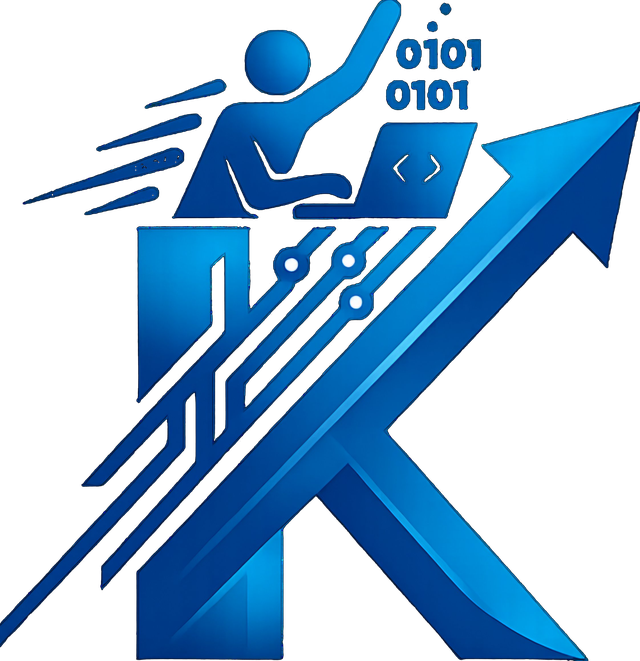

200 Mio.+
Proteinstrukturen
KI hat die 3D-Faltung von über 200 Millionen Proteinen vorhergesagt — nahezu jedes der Wissenschaft bekannte Protein. Eine Aufgabe, an der die Forschung jahrzehntelang sass.

KappromptWas künstliche Intelligenz heute schon kann, grenzt an Magie. Scroll dich nach unten — von einem Gedanken bis um die ganze Welt.
Vor wenigen Jahren noch Science-Fiction. Heute Alltag. Eine kleine Auswahl dessen, was gerade möglich ist.
KI hat die 3D-Faltung von über 200 Millionen Proteinen vorhergesagt — nahezu jedes der Wissenschaft bekannte Protein. Eine Aufgabe, an der die Forschung jahrzehntelang sass.
Aus einer geschriebenen Beschreibung erzeugt KI fotorealistische, bewegte Szenen — ohne Kamera, ohne Set, ohne Filmteam.
Gesprochene und geschriebene Sprache wird in über hundert Sprachen übersetzt — nahezu ohne Verzögerung, mitten im Gespräch.
KI schreibt, erklärt und repariert Programme in dutzenden Sprachen — von der ersten Zeile bis zur fertigen Anwendung, wie dieser hier.
Ein 3D-Charakter, der lebt — er schaut sich um und folgt deinem Cursor durch den Raum. Bewege die Maus über die Figur und sie blickt dir nach.
3D-Neigung nach Mausposition, ein Lichtreflex wandert über die Oberfläche, der aktive Rand glüht dezent — der Inhalt bleibt ruhig und lesbar.
Physikalisch basierte Materialien mit Environment-Light statt aufgemalter Verläufe — Glas reagiert auf das Licht im Raum.
Area Lights und Rim-Light formen die Kanten der Objekte — kinematisch ausgeleuchtet, ohne harte Schatten.
Schweben, Kippen, Gleiten und Öffnen — gesteuert aus Scroll-Fortschritt, Mausposition und ruhiger Idle-Motion.
Scroll weiter — und übernimm die Regie. Jeder Frame folgt deiner Bewegung.
Gesteuert allein durch dein Scrollen.